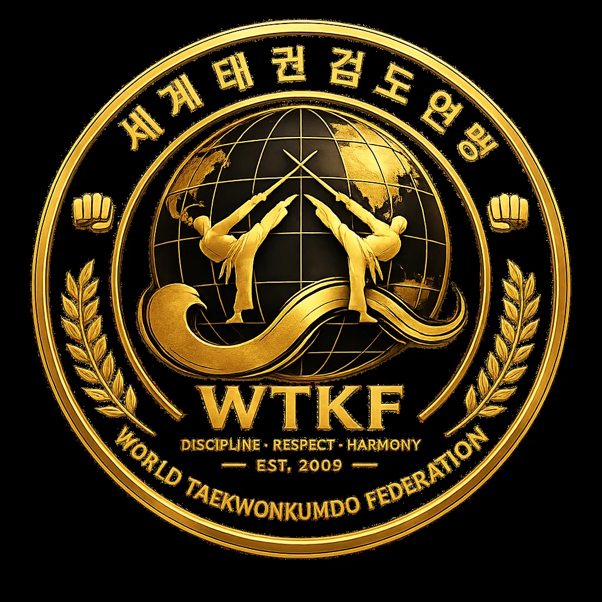
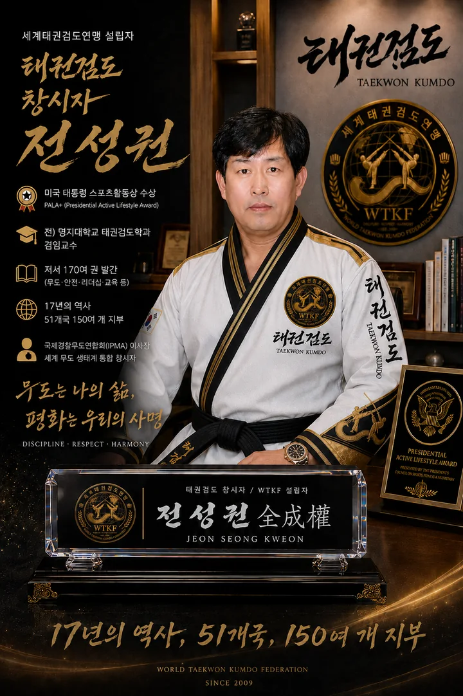

검선 TRAINING
정면, 15°, 65°의 기준 검선을 보고 바른 궤적을 반복합니다.

WTKFWORLD TAEKWONKUMDO FEDERATIONTAEGEOM · WORLD TAEKWONKUMDO FEDERATION
검과 발이 하나 되는 길. 화면의 검선을 따라 정확하게 반복하고, 순간적으로 반응하며, 나의 수련시간과 점수를 기록하는 태권검도 전용 디지털 수련장.
태권검도의 핵심인 베기·막기·찌르기를 기준으로 검선, 각도, 반복횟수, 정확도, 반응속도와 수련시간을 단계적으로 훈련하도록 설계했습니다.
정면, 15°, 65°의 기준 검선을 보고 바른 궤적을 반복합니다.
초승달·반달·보름달베기, 좌우베기, 사선베기, 찌르기와 막기를 수련합니다.
3·2·1 신호와 상대 공격에 순간적으로 대응하며 반응시간을 측정합니다.
수행횟수·정확도·점수·누적 수련시간을 기록해 스스로 발전을 확인합니다.

“정확하게 베고, 정확하게 막고, 정확하게 찌른다. 반복은 기술을 만들고 기록은 성장을 증명한다.”
태권검도는 태권도의 역동성과 검도의 검법을 융합한 신개념 무도·스포츠입니다. 본 시스템은 수련생이 장소와 시간에 구애받지 않고 기본 검법을 반복하고 자신의 수련 결과를 확인할 수 있도록 개발하고 있습니다.
기존의 실제 반복수련 기능을 유지하면서 처음 배우는 사람, 일반 수련생, 태권도 4단 이상 지도자, 공식 지도자, 온라인 세미나와 보수교육까지 각각의 교육방을 미리 구축했습니다.
검 이해 · 안전 · 잡는 법 · 기본자세부터 시작합니다.
베기 · 막기 · 찌르기 · 이동 · 반응 · 콤보를 단계별 수련합니다.
태권도 4단 이상 지도자를 위한 압축 전문과정입니다.
교수법 · 오류교정 · 안전 · 심사 · 지도실습 · 보수교육으로 연결합니다.
INTEGRATED ACADEMY · v1.4의 실제 수련기능 전체 보존 + v1.5의 교육과정·지도자·세미나·인증 구조 통합
실제 동작 영상 · 음성 코칭 · 레벨 인증 · 개인 ID · 스마트폰 센서 기반 각도/속도 측정으로 확장 예정